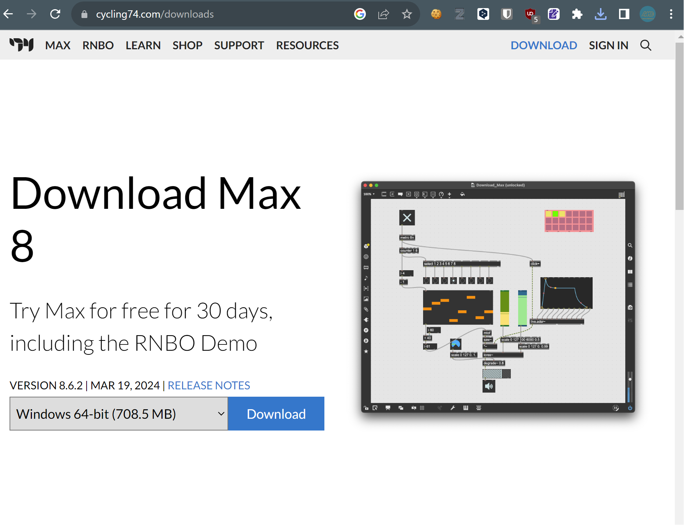

Preparation - Software Section
In VisVib, 2 application are used.
- Audio/Light Application
- This is run on the audio programming environment Max by Cycling'74.
- Video Application
- If only Lighting control is needed, no need to install this.
Audio/Light Application
Install Cycling '74 Max
This is the software needed to run the sensor application. Max is a paid software, but it is free to use just for
running completed programs.
Download an appropriate installer for your OS from the following URL:
https://cycling74.com/downloads
Please use the latest version (v8.3 or later).

After downloading, unzip the file, run the installer application, and follow the instructions.
Note
If you are using Mac(Apple Silicon CPU), make sure to check "Open with Rosetta" on the menu by right-clicking /Applications/Max.app and clicking "Show info".
This is because the external object for controlling DMX USB PRO is compatible with only Intel architecture.
Download the Audio/Light Application files
You can download the latest version of the Audio/Lught application (which is Max Project files) from the following URL:
https://github.com/ccbtokyo/ccbt_tonechime_sensor/archive/refs/heads/main.zip
After downloading, unzip the file and move the entire folder to an accessible location such as the desktop.
Double-clicking the file ccbt_tonechime_sensor/maxproject/ccbt_tonechime_sensor/ccbt_tonechime_sensor.maxproj will
launch the main application.
Note
Configuration data is written to the file ccbt_tonechime_sensor/maxproject/ccbt_tonechime_sensor/data/main.json. If you want to carry over previous settings to a new computer, either copy the entire folder from the previous computer or move and overwrite the main.json file.
Downloading the Video Application
Please download the latest version of ToneChime_VideoSystem.zip from the following URL:
https://github.com/ccbtokyo/ToneChime_VideoSystem/releases
After downloading, extract the zip file and place the entire folder in an accessible location such as the desktop.
The main application is the ToneChime_VideoSystem application within the folder.